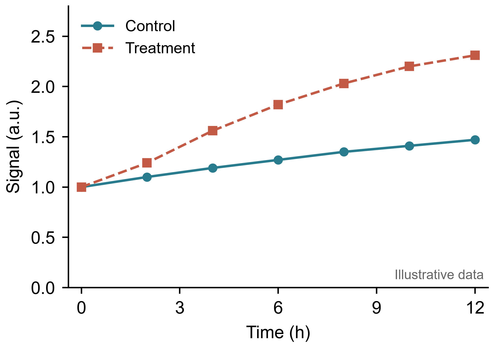

用 Codex 接入 Origin：从数据到精美论文图表
把数据放进 Origin，再逐项调整线条、字号、图例和导出尺寸，是科研绘图里很容易重复的工作。接入 Codex 后，可以用一段明确的要求驱动这些操作，再对生成的图逐轮检查。
这篇教程从 Windows 本机环境出发，使用社区项目 Ge-Shun/origin-mcp 连接 Codex 与 Origin/OriginPro，完成一张双系列点线图。这里的 Origin 指 OriginLab 科研作图软件。
阅读说明：配置依据 2026 年 10 月 22 日可查文档整理，示例固定使用 origin-mcp 0.1.4。它是仍在测试的社区项目，不是 OpenAI 或 OriginLab 官方插件。本文核对了发布包中的命令与入口；Origin GUI 的完整出图流程仍需在你自己的已授权环境中验证。
一、先理解这条连接链路
你的要求 → Codex → 本机 MCP 服务 → Origin 内的 Bridge → 数据表、图页与导出文件
Codex 负责拆解任务、调用工具和检查结果；MCP 服务提供作图工具；Bridge 将请求交给 Origin 执行。图页与工程保存在本机，完成后仍能在 Origin 中继续编辑。桥接结构与运行方式见项目的 Bridge 文档。
适合交给它的任务包括导入表格、创建点线图、统一坐标轴和图例、复用图形模板、批量输出。你仍需要决定图的科学含义：变量对应关系、单位、误差定义，以及是否应该做拟合。
二、准备环境，再装到独立目录
| 组件 | 本文使用的方式 |
|---|---|
| Windows 与 Origin | 本机已安装并授权的 Origin/OriginPro；项目当前面向 2026/2026b。 |
| 外部 Python | 项目要求 3.10+，以下命令以已安装 Python 3.11 为例。 |
| Codex | 能在这台 Windows 上启动本地 STDIO MCP 的 Codex 环境；CLI 命令仅在已安装 Codex CLI 时使用。 |
版本要求来自 origin-mcp 0.1.4 发布页。外部 Python 用来运行 MCP；Origin 里的 Bridge 使用 Origin 自带的 Python，两者的安装位置可以不同。
在 PowerShell 中运行下面的命令。没有 3.11 时，先用 py -0p 查看已安装版本，再把建环境命令中的版本改成实际可用的 3.10+。
New-Item -ItemType Directory -Force C:\origin-paper\data, C:\origin-paper\output | Out-Null
py -3.11 -m venv C:\origin-paper\.venv
& 'C:\origin-paper\.venv\Scripts\python.exe' -m pip install 'origin-mcp==0.1.4'
& 'C:\origin-paper\.venv\Scripts\python.exe' -m pip show origin-mcp这里不依赖虚拟环境的激活状态，后续全部使用可执行文件的完整路径。成功后，pip show 应能显示包信息及这个虚拟环境中的安装位置。
工作目录建议这样整理：
C:\origin-paper\
.venv\ # MCP 运行环境
data\demo.csv # 原始或教学数据
output\ # 图与 Origin 工程三、在 Origin 中启动 Bridge
只装 Python 包还不够，还需要在 Origin 内建立连接。这里采用项目提供的 Start/Stop App 方式：
& 'C:\origin-paper\.venv\Scripts\origin-mcp.exe' install-origin-app --force- 查看命令输出，找到它打印的两条
mkOPX命令。 - 打开 Origin 的 Command Window，在那里执行这两条命令，生成 Start 和 Stop 的 OPX 文件。这两条不是 PowerShell 命令。
- 把生成的两个 OPX 文件拖入 Origin，完成 App 注册。
- 在 Apps 中点击 Origin MCP Bridge Start。每次重新启动 Origin 后，都需要重新启动 Bridge。
OPX 的完整路径以你本机打印结果为准，打包路径保留 Windows 反斜杠。具体注册说明见 项目的 Origin UI Buttons 文档。
Bridge 启动后，回到 PowerShell 检查：
& 'C:\origin-paper\.venv\Scripts\origin-mcp.exe' status
& 'C:\origin-paper\.venv\Scripts\origin-mcp.exe' doctor --ping-origin先确认诊断能够联系到 Bridge，并完成与 Origin 的实际握手，再开始绘图。Bridge 的前台运行方式可能持续占用启动它的 Python 控制台，这是该项目的运行方式；停止时使用 Origin MCP Bridge Stop App。停止前先保存需要保留的工程。
四、把本地服务接入 Codex
Codex 的 MCP 配置使用 config.toml。以下按 OpenAI 官方 MCP 文档 写成 TOML；不要把其他客户端的 mcpServers JSON 直接粘进 TOML 文件。
在 Windows 的 %USERPROFILE%\.codex\config.toml 中合并下面这段，保留已有配置。如果已经存在同名的 [mcp_servers.origin]，修改原表即可，不要重复添加。
# Example only: merge this table into your Codex config.toml.
# Create C:\origin-paper\.venv and install origin-mcp there first.
[mcp_servers.origin]
command = 'C:\origin-paper\.venv\Scripts\python.exe'
args = ['-m', 'origin_mcp']
cwd = 'C:\origin-paper'
startup_timeout_sec = 30
tool_timeout_sec = 180
[mcp_servers.origin.env]
ORIGIN_MCP_ALLOWED_ROOTS = 'C:\origin-paper'单引号表示 TOML 字面量字符串，Windows 路径不需要把反斜杠写成两次。command 必须指向前面安装了包的 Python；cwd 和允许访问的目录要与实际工作目录一致。这里的 30 秒启动超时、180 秒工具超时是本文的示例设置，可按本机情况调整。
如果使用 Codex CLI，也可以通过命令登记服务，再按需补充 TOML 中的工作目录、超时与环境变量：
codex mcp add origin -- 'C:\origin-paper\.venv\Scripts\python.exe' -m origin_mcp
codex mcp listCLI 登记与手动配置选择一种即可。完成后重新启动或重新连接 Codex 会话。先发出一条诊断请求：
请检查已配置的 Origin MCP 工具，调用连接诊断并确认 Origin 可以响应。先只检查连接和可用工具，不新建项目、不改动数据、不关闭现有窗口。如果 Codex 只列出了服务名称，却还无法执行 Origin 诊断，先回到上一步处理 Bridge；服务登记成功和软件连接成功是两件事。
五、从一份小数据开始出图
下载教程示例包，其中包含 CSV、TOML 配置示例、绘图提示词和说明。也可以单独下载 demo.csv，将它放到 C:\origin-paper\data\demo.csv。
数据只有三列，方便检查映射。下面的数字全部为人为构造的教学数据，不代表真实实验结果。
time_h,control,treatment
0,1.0,1.0
2,1.1,1.24
4,1.19,1.56
6,1.27,1.82
8,1.35,2.03
10,1.41,2.2
12,1.47,2.31第一轮先做两条带点折线，暂不加入误差棒、拟合曲线和显著性标记。把以下要求发给已经连接 Origin 的 Codex：
请用已经连接的 Origin MCP 处理 C:\origin-paper\data\demo.csv。
先读取表头与数据范围，报告列映射；这份数据是人为构造的教学数据。
以 time_h 为 X，control、treatment 为 Y，创建双系列点线图。
只绘制原始点和连接线，不做平滑、拟合，也不要添加误差棒或显著性标记。
成图尺寸 85 mm × 60 mm，白底、Arial 8.5 pt，线宽约 1.2 pt。
Control 用 #287C8E 圆点实线，Treatment 用 #C35A46 方点虚线。
X 轴为 Time (h)，Y 轴为 Signal (a.u.)，图例不要遮挡数据。
请根据实际工具 schema 和可用模板完成操作，不要猜测不存在的工具。
先生成预览检查裁切、图例和轴标题，再导出 output 中的新文件：
fig1.pdf（矢量）、fig1.png（600 dpi），以及可继续编辑的 Origin 项目。
如果导出工具不能直接设置 dpi，请换算物理尺寸对应的像素并说明实际设置。
保留原始 CSV，另存项目；同时记录采用的列映射、样式和导出路径。这种写法同时交代了数据位置、列含义、图型、系列区分、物理尺寸和交付文件，Codex 更容易逐项完成。若当前版本的工具参数不同，让它先读取工具 schema 和项目知识库，再选择可用操作。

项目提供 origin_view_graph 一类预览能力，工具与格式支持见 工具文档。让 Codex 取得实际 Origin 图页的预览后再继续修改，尤其检查数据是否对应正确、图例是否挡住曲线。
六、把精修要求分成几轮
第二轮只改视觉层次，让修改范围清楚：
只修改刚才那张图的样式：统一字体、轴标题与刻度字号，调整图例到不遮挡数据的位置，保留两组不同点型与线型。不要修改数据、重新拟合或改变列映射。修改后给我实际图页预览，并列出改动。第三轮检查交付文件，而不是仅看软件窗口里的效果：
- 物理尺寸：按论文版面确定单栏或双栏宽度。85 × 60 mm 是本文示例，不是所有期刊的统一要求。
- 导出格式：保留可编辑的 Origin 工程，同时导出 PDF 与 PNG。85 × 60 mm 在 600 dpi 下约为 2008 × 1417 像素；DPI、像素和物理尺寸要能相互对应。
- 最终可读性：把图按论文中实际放置大小查看，确认文字、点型、虚线和细线仍能辨认；打开导出的 PDF 检查字体与边界。
- 信息完整性：图例名称、轴单位、样本量和误差定义应当与论文正文一致；具体交付要求以目标期刊作者指南为准。
如果后续需要误差棒，请提供重复测量数据，并明确使用 SD、SEM 还是置信区间以及样本量。只有每个 X 对应一个 Y 的表格时，不应让模型自动补出误差或统计显著性。
满意后，可以让 Codex 将当前图页保存为可复用的 Origin 模板，并记录配色、尺寸、字号和输出参数。下一次处理同类型数据时，先匹配模板再生成，风格会更一致。
七、遇到问题，按连接层次排查
| 现象 | 先检查什么 |
|---|---|
| 提示找不到 origin_mcp | 比较安装包与 MCP command 使用的 Python 是否为同一个完整路径。 |
| 服务存在，但 Origin 没有响应 | 在 Origin 内重新启动 Bridge，再运行 status 和 doctor --ping-origin。 |
| Origin 的 Python 控制台一直忙 | 前台 Bridge 会持续服务请求；按项目说明使用 Stop App 停止，不要直接反复启动多个实例。 |
| CSV 被拒绝访问 | 文件是否存在于 C:\origin-paper 下，是否与允许访问目录一致，列名是否与提示词一致。 |
| 部分图型、分析或导出参数不可用 | 检查本机 Origin 版本、授权与实际工具 schema；让 Codex报告限制，再选择可用操作。 |
| 软件里好看，导出的字太小或被裁切 | 核对图页物理尺寸、导出像素、边距和字体，打开导出文件重新审图。 |
资料与验证范围
本文已检查教学 CSV、TOML 语法和示意图，并静态核对 origin-mcp 0.1.4 发布包内的 CLI、模块入口和 App 资源。本文没有在 Origin GUI 中运行端到端绘图测试；上面的提示词描述目标输出，实际能力以本机诊断和工具返回结果为准。
评论
读到这里，聊两句吧使用 GitHub 账号登录后即可发表评论，支持 Markdown。评论会公开展示。
连接较慢时，可以直接前往 GitHub 参与讨论。